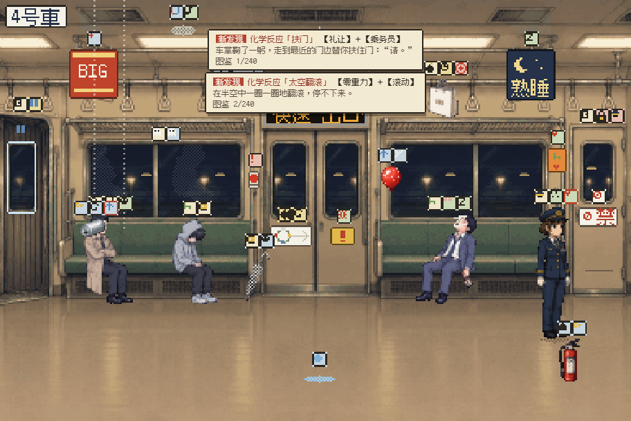
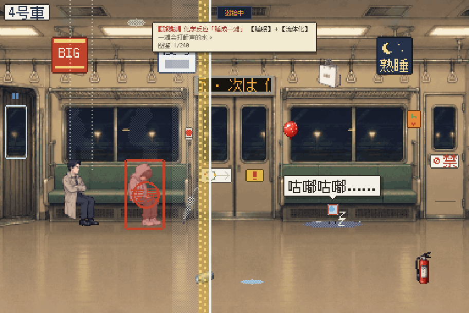
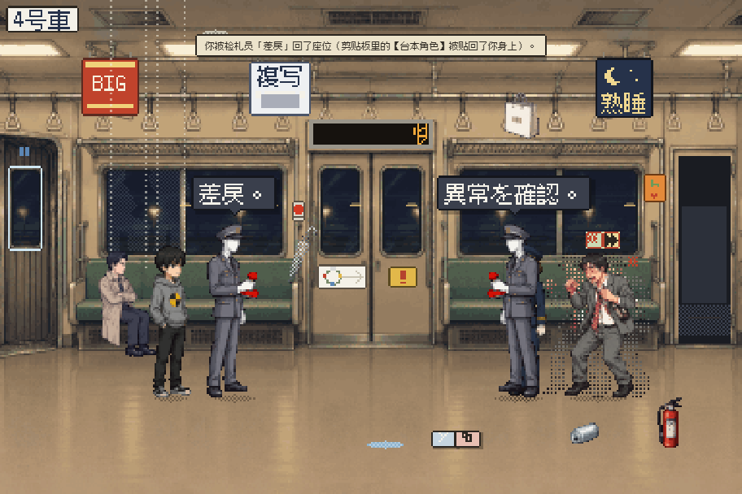
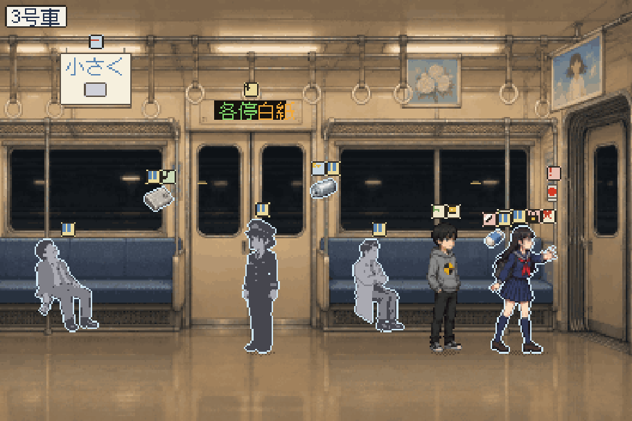
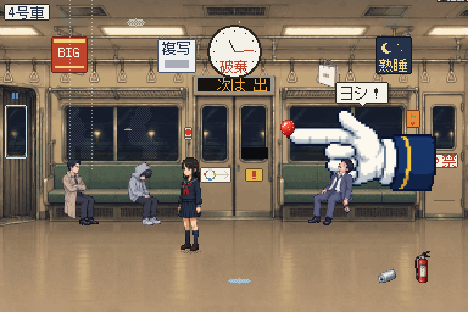
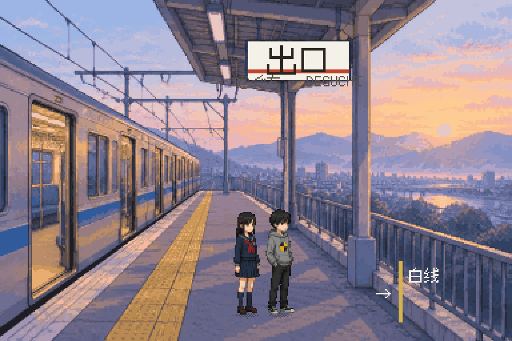

00目录 本页的表格全部由游戏本体的数据文件实时生成，与游戏内容永远一致
01一句话与核心体验
你是末班车 04 号车厢里一个本该“睡着”的测试假人。这节车厢每五分钟爆炸一次、重来一次，是用来训练“拆弹侦探 AI”的沙盒。你能把世间万物身上的词条剪下来、贴到别处——用这把剪刀改写物理、时间、AI 判定与界面本身，在每 60 秒一次的“白线巡检”前伪造现场，唤醒同伴，最后剪掉画面的【边界】，跨过那条“请退到白线以内”的白线。
系统驱动的规则拼图（Systemic Gameplay）＋ 时间循环推理 ＋ 沙盒潜行博弈。参照系：《Baba Is You》的“规则即物体”、《Outer Wilds》的“知识跨轮保留”、《Inscryption》的元叙事破壁。
纯静态 HTML（双击 index.html 即可游玩，file:// 下同样可用），电脑与手机（竖屏/横屏）都能完整游玩。
主线约 40–70 分钟；“一题多解”与“化学反应图鉴”提供大量重玩价值；通关后解锁“自由实验”沙盒。
日系车厢与车站：纸、墨、印章、LED 案内表示器、导盲砖。没有霓虹，没有赛博朋克，没有褪色特效。
01½实机画面 384×256 逻辑分辨率，按设备像素比整数放大






02四条策划铁律 → 落地方式
| 铁律 | 在游戏里怎样实现 |
|---|---|
| ① 拒绝唯一解，拥抱系统级涌现 | 每个物体都携带可剥离的词条（含一滴冷凝水、一张广告、一行站名、一个暂停按钮）。词条不是“钥匙”，而是会叠加生效的系统属性：零重力会漂浮、流体会从门缝下流走、磁力会吸金属、复制品不继承锁……任意两个词条贴在一起，属性自然叠加；其中 ? 种组合另有手写的“化学反应”。每个关键节点 4–12 种解法（见第 11 节）。 |
| ② 维持“破坏与伪装”的猫鼠压迫感 | 每 60 秒一次“白线巡检”：发车旋律式预告 → 10 秒倒数 → 扫描线从左到右只扫一遍。与台本不符的东西会被盖「差戻」章、恢复原状，剪走的词条会被从剪贴板没收；警戒满 3 次强制重来。伪装手段同样是系统性的：归位、【回送】跳过、【乘务员】受信任、【最高仇恨】诱饵、【复制增殖】刷爆内存…… |
| ③ NPC 是鲜活的状态机 | 每个 NPC 都按“词条覆盖 → 职责 → 台本时间轴”的优先级行动：车掌会处理非常、制伏威胁、捡失物、替人扶门；侦探会调查一切带【最高仇恨】的东西；醉汉贴上【高威胁】+【快速】会变成满车厢乱窜的“醉拳暴走”，彻底打乱时间轴。每个角色对每个词条都有专属台词（见第 12 节）。 |
| ④ 层层递进的破壁 | 第一幕以为在玩推理拆弹 → 被“剪切”进剪贴板 → 第二幕在监视器上看到“試験環境 04 / 失敗 ×4096”的寒意 → 第三幕与觉醒的少女一起让系统的检札员互相盖章的狂欢 → 第四幕 HUD、暂停键、对话框的×、画面外框全都成了可剪的词条，最后剪掉【边界】，画面真的“框不住”了。 |
03增 · 删 · 改 · 完善 作为项目负责人对原始提案做的调整
增加了什么
- 「白线」：把监管系统命名为日本站台广播“请退到白线以内”里的白线。巡检＝白线扫过；结局＝跨过白线。主题、机制、意象三合一。
- 台本（剧本册）：第一幕的核心线索就是一本写好了未来的台本；之后它变成可查阅的时间轴，页边有少女的铅笔字与“红笔改稿”。
- 剪贴板跨轮保留：时间重置，剪贴板里的词条还在（《Outer Wilds》式的知识/工具传承）。
- 【台本角色】归位仪式：玩家从自己身上剪下的“锁链”，贴回去就会被瞬间扯回座位——让“60 秒心跳”有了一个可操作的动作。
- 栞的书签：被【书签】夹住的东西跨轮保持原样；她本人就是“存档点”。
- 日式规则来源：優先席→【礼让】、回送→【回送】、遅延→【延迟】、忘れ物→【遗失物】、非常通報→【非常】、指差確認的白手套→最终 Boss。
- 界面词条（第四幕）：真实网页上的 HUD、暂停键、×、目标栏、画面外框都能被剪贴。
- 化学反应图鉴 + 一题多解统计 + 自由实验：鼓励实验，把“多样性”变成可见的收集目标。
删减 / 修改了什么
- 删：一切霓虹、赛博朋克元素与“色彩丢失”类特效。系统的“恐怖”改用日本办公文化表达：红色橡皮章「差戻」、黑塗り（涂黑）、LED 案内表示器、发车旋律。
- 改“系统清除触手” → 墨塗り（涂黑）与橡皮擦除；“广播室” → 列车尾部的乘务员室（有广播麦克风、方向幕、失物箱）。
- 改第一幕“被抹杀” → 被剪切（Ctrl+X）进剪贴板：能力的来源因此自洽。
- 改第三幕“诱导防卫机制内讧” → 具体化为检札员互相盖「差戻」章、刷爆内存、让它们变成乘客坐下……
- 改剧情动机：系统只认“侦探拆弹”。第一幕你拆弹＝越权被删；第三幕让“侦探”拆弹＝训练完成、环境回收——回收的几秒钟里边界松动，那是唯一的出口。
- 减“垃圾桶”在主线中的分量（保留为【垃圾】的来源），换成更日式的“失物文化”。
完善了什么
- 巡检的完整判定规则（跳过、信任、必查、诱饵、卡死、没收、警戒、强制重置）。
- 带锁词条、带【锁定】的对象（词条剪不下、但能贴上）、延迟生效、词条过载（7 个）、掉落词条可捡起、剪贴板“退回原处”。
- 印刷类来源（广告、贴纸、显示屏）上的原生词条只是“印着的字”，不会让广告自己复制自己。
- 三级提示（越来越直接）与卡关自动提示，保证不会卡死。
04世界观与角色
夜见线（よみせん）是一条环状地铁：白紙（白）→ 仮置（黄）→ 検収（蓝）→ 出口（红）。末班车 0:24 从「白紙」发车，每五分钟——就在即将到达「出口」时——炸弹爆炸，一切重置为下一“稿”。这里是运行管理 AI「白线」的试验环境 04：只有 4 号车厢被完整生成，3 号车厢被冻结，1、2 号车厢根本没有渲染，隧道在车尾一百米外断成一片空白的稿纸。
05四幕结构与情绪曲线
| 幕 | 玩家以为 | 新能力 / 新规则 | 核心节点 | 情绪 |
|---|---|---|---|---|
| 第一幕 剧本的囚徒 台本の囚人 | 一场末班车上的推理拆弹 | 移动、调查、交谈；读“台本”预知未来 | 读懂字条“剪断顺序＝接下来经过的车站的颜色”，在黑川剪错线前拆弹 → 系统盖章「削除」→ Ctrl+X → 剪贴板空间里剪下自己的【台本角色】→ Ctrl+V | 悬疑 → 冷不防的寒意 |
| 第二幕 戴着镣铐的篡改者 枷つきの改竄者 | 我能改写这节车厢 | 剪切/粘贴（容量 3）、60 秒巡检、警戒度、跨轮保留 | 熬过第一次巡检；用十几种方法之一进入乘务员室；监视器揭示“试验环境”；临时巡检中伪造现场 | 好奇 → 发现真相的寒意 |
| 第三幕 唤醒同类与化学反应 同類の目覚め | 我不是一个人 | 双人切换、容量 5、书签、保安模式（检札员＋45 秒巡检） | 解冻 3 号车厢的栞（时间/复制/借系统之手）；让检札员内讧；让“侦探”拆弹成功（标签欺骗、诱导、剧本冲突、身份窃取……） | 温暖 → 和同伴戏耍系统的狂欢 |
| 第四幕 死锁宇宙与跨越维度 デッドロック | 连画面本身都是词条 | 界面词条、容量 7；白线没收词条、指差盖章 | 剪下 HUD 的【倒计时】止住崩塌；用自指/身份/时间/叙事/界面/荒诞死锁击败白线；剪下画面【边界】；在“出口”站跨过白线 | 高潮 → 黎明的释然 |
两种结局：解救原本的栞＝「始发」；以复制品的形式解救她＝「书签」（原来的她会继续夹在 3 号车厢，为下一个醒来的人留字）。解放黑川会让他也一起走上月台。
06分秒级时间循环剧本 一“稿”＝300 秒；第一到三幕通用
可利用的时间窗口
- 00:00–00:15、01:40–02:15、03:10 以后：车掌在乘务员室里——此时闯入会被请出去；其它时间乘务员室是空的。
- 02:30–03:30：显示屏插播「遅延」，可以剪下【延迟】；贴在炸弹上整整推迟一分钟（遅延証明書）。
- 02:40：黑川取下纸袋，炸弹从网棚移到地上——巡检对炸弹位置的要求随之改变。
- 04:30：黑川按台本剪线。在此之前改写标签/让他研究路线图/让他脱离台本，都会改变结局。
07巡检（沙盒攻防）规则
判定
- 对象的词条（类型与数量）必须与台本一致；角色必须在台本规定的位置与姿势；物品必须在原位。
- 复制品、掉落的词条、被搬走的东西＝异常；被删除的原生对象会被重新生成。
- 跳过：带【回送】的对象；挂着【回送】的整节车厢里的一切；车窗里的【倒影】。
- 信任：带【乘务员】的对象（「乗務員、ヨシ！」），除非同时带【异常】。
- 必查：带外来【异常】的对象。
处理与特例
- 异常对象被盖「差戻」章并恢复原状：外来词条送回原主，被剪走的词条从剪贴板没收。
- 发现异常＝警戒 +1；满 3＝本轮强制重置（剪贴板保留）。
- 诱饵：带外来【最高仇恨】的异常物会把扫描线“吸”过去，处理完它就提前收工。
- 卡死：【最高仇恨】+【回送】→“最需要关注的东西正在回送中”→ 整次巡检中止。
- 内存溢出：复制品过多→系统回收全部复制品与检札员，下一次巡检取消。
- 时间差：扫描线每次只扫一遍——它经过之后再动手，它不会回头。
08场景互动物体清单 带“锁”的词条无法被剪下
09全量属性词条库
10跨词条组合效果矩阵
红格＝手写的“化学反应”（点击查看）；深蓝格＝同一词条叠加；其余格子＝系统层叠加：两个词条的属性同时生效（例如【零重力】×【流体化】在没有手写反应时也会是一颗漂浮的水洼）。三词条反应列在下方清单里。
全部化学反应清单
11一题多解矩阵 每个核心节点 4–12 种不同流派的解法
12NPC 状态机 同一个词条，在不同人身上是不同的人生
行为优先级：物理/时间覆盖（静止、漂浮、液化、被搬运）→ 心智覆盖（睡眠、威胁、礼让、唠叨、遗失物……）→ 职责（车掌：非常 → 威胁 → 失物 → 最高仇恨 → 扶门 → 驱赶闯入者；侦探：调查最高仇恨）→ 台本时间轴。
13交互与多端
易用性
- 两种等价的操作：先选对象（点它的词条＝剪下；点剪贴板＝贴上）或先拿词条（点剪贴板拿起，再点场景目标）；也可以直接拖拽。
- 选中对象时时间放慢一半（可关闭）；随时暂停；快进 ×4。
- 小东西点不中？「对象」列表列出当前车厢的一切；点击判定区自动扩大到 16 像素。
- 「透视」显示所有对象的词条图标；外来词条带红角标；带锁词条带斜纹。
- 三级提示（越来越直接）；卡关 150 秒后提示按钮闪烁；随时“重来本轮”。
- 任何会造成永久损失的操作都可以被时间重置/巡检撤销；剪贴板永远保留；自动存档。
多端
- 宽屏：画面在左、面板在右；竖屏手机：画面在上、面板在下；横屏手机：窄面板。
- 画面按设备像素比做整数（或 1/8 精度近整数）缩放；UI 的“像素单位”同样按 DPR 计算，像素字体永远锐利。
- 场景文字使用离线光栅化的位图字体图集（Fusion Pixel Font），不受各浏览器抗锯齿差异影响。
- 触屏：阻止双击缩放、长按菜单；音频在第一次轻触时解锁；安全区（刘海屏）留白。
- 键盘：←→移动 空格暂停 F快进 Tab切换对象 Ctrl+X剪下 Ctrl+V粘贴 1–7剪贴板 T台本 H提示 Q切换角色。
14美术与声音
背景、角色、头像、道具先由图像模型按“日系末班车·16-bit 像素·无霓虹”的统一提示词生成，再经自制管线按真实像素网格做面积平均缩小 → 品红抠图 → 去孤岛 → 调色板量化，得到 384×256 逻辑分辨率下的真像素素材。车厢之外的“未渲染空间”用稀疏网格表示；剪贴板空间是原稿用纸。
动态：每个角色都有 12 帧走路循环，全身联动——身体按“接触→下沉→经过→上升”起伏 2px，后脚蹬地时脚跟抬起、脚尖钉地，前脚以脚跟着地；双腿按两段式 IK 摆动，并把原画里每条腿的裤子、袜子纹理沿骨骼贴回去（褶皱和明暗都是原画的）；手臂与同侧腿反向摆动（白鷺的白手套、栞的手、田中的公文包），头部略微前倾，醉汉田中左右晃，衣摆与裙摆反向飘；起步从“双脚并拢、一脚离地”的经过帧开始。动画按“走过的距离”推进，并把身体画在本帧的起点：支撑脚在整个支撑期都钉在同一个地板像素上（自动化实测滑步 0px），着地帧同步脚步声与扬尘。另有呼吸起伏、坐下/起身过渡、坐着的人偶尔张望、随轨缝“咣当”声的轻微车厢颠簸。
调色：暖白荧光灯、米色车壁、鼠尾草绿座椅、海军蓝制服、导盲砖黄、印章红。HUD 仿车门上方的 LED 案内表示器（琥珀色字，无辉光）。
声音（全部由 WebAudio 实时合成）
- 列车环境：滤波棕噪声低鸣＋“咣当、咣当”的轨缝节奏。
- 巡检预告：原创的钟琴“发车旋律”；车门“叮咚”；剪切纸声、粘贴声、印章“咚”。
- BGM：五首极简音序——深夜、紧张、狂欢、终局、黎明。
- 可选：用设备自带的日语语音朗读车内广播（「まもなく、巡検です。白線の内側まで、お下がりください。」）。
字体与版权
像素字体：Fusion Pixel Font（© TakWolf，SIL Open Font License 1.1）。角色、场景为本项目生成的原创素材；车站、线路、广告品牌均为虚构。